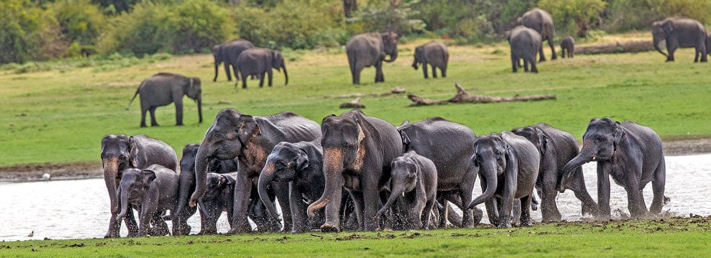
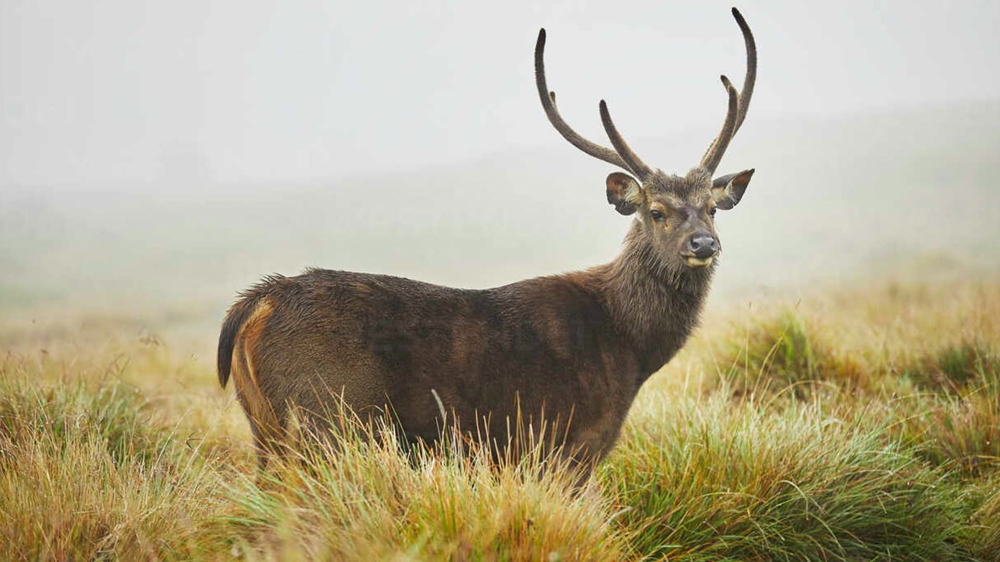
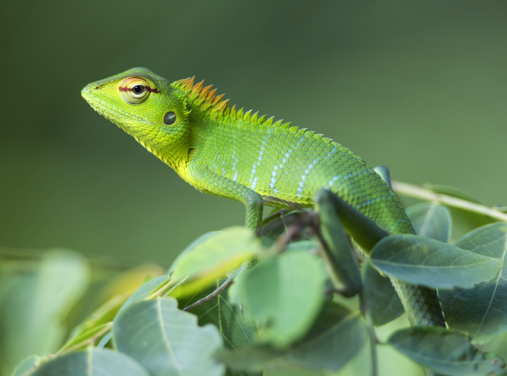
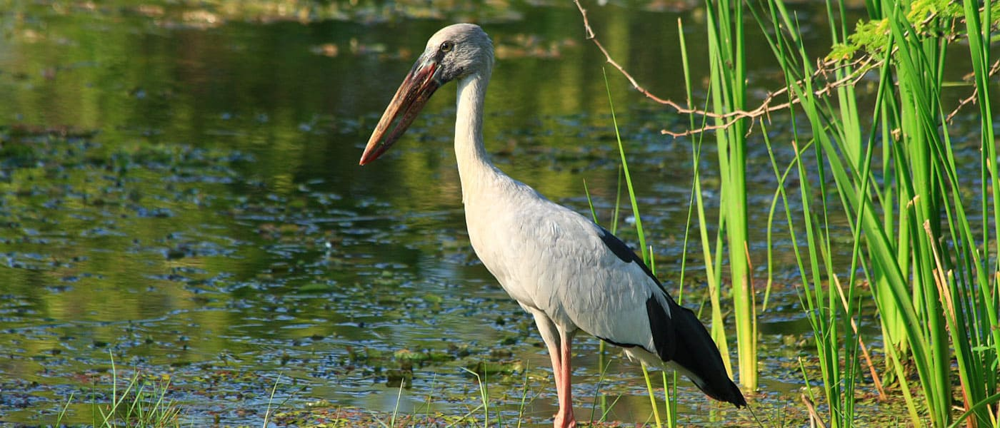

"Sri Lankan wildlife, a mesmerizing symphony of biodiversity, enchants the soul with its unique melodies. From the majestic elephants that gracefully roam to the elusive leopards that dance within the shadows, the lush landscapes of Sri Lanka harbor tales of resilience and harmony in the vibrant tapestry of nature's masterpiece."
Wild Life Locations
Sri Lanka's diverse ecosystems offer a myriad of wildlife experiences beyond Yala and Wilpattu. In Udawalawe National Park, visitors witness herds of elephants against a picturesque backdrop of rolling grasslands and shimmering reservoirs. Horton Plains National Park, with its misty landscapes, is home to the elusive sambar deer and colorful highland bird species. The Sinharaja Rainforest, a UNESCO World Heritage Site, shelters countless endemic species, from vibrant butterflies to the purple-faced langur. Bundala National Park, a Ramsar Wetland site, attracts bird enthusiasts with its migratory flocks, including flamingos and pelicans. These locations collectively contribute to Sri Lanka's reputation as a wildlife enthusiast's paradise.
Udawalawe National Park
Nestled in the embrace of Sri Lanka's enchanting landscapes, Udawalawe National Park stands as a wildlife haven, captivating visitors with its breathtaking scenes of untamed beauty. This sanctuary, spanning over 30,000 hectares, is renowned for its thriving elephant population, offering a front-row seat to the majestic giants as they gracefully navigate the park's diverse terrain of grassy plains and shimmering reservoirs.
Udawalawe Reservoir, at the heart of the park, serves as a vital watering hole, attracting a myriad of wildlife, from playful monkeys to vibrant bird species. A safari through Udawalawe unfolds a captivating narrative of coexisting biodiversity against a backdrop of stunning natural vistas.
Horton Plains National Park
Horton Plains National Park, situated in Sri Lanka's central highlands, offers a captivating blend of unique biodiversity and breathtaking landscapes. This protected area, characterized by rolling grasslands and cloud forests, is a haven for wildlife enthusiasts. Among its inhabitants are the elusive sambar deer gracefully navigating through the mist-kissed plains.
The park is also home to an array of avian wonders, including the colorful and endemic Sri Lanka whistling thrush. Visitors can witness the surreal beauty of Baker's Falls and World's End, two iconic landmarks within the park. Horton Plains National Park stands as a testament to Sri Lanka's commitment to preserving its natural heritage.
Sinharaja Rainforest
Sinharaja Rainforest, a jewel in Sri Lanka's ecological crown, pulsates with biodiversity and endemism. This UNESCO World Heritage Site, nestled in the island's southwest, encapsulates a lush tapestry of flora and fauna. Towering dipterocarp trees embrace a thriving ecosystem where elusive species like the purple-faced langur and the endangered hump-nosed lizard find refuge.
The air resonates with the melodic calls of vibrant birds, including the Red-faced Malkoha and the Sri Lanka Blue Magpie. Sinharaja's crystal-clear streams harbor unique amphibians, and its forest floor is adorned with exotic orchids and ferns. This ecological haven stands as a testament to the irreplaceable importance of preserving Earth's vanishing rainforests.
Bundala National Park
Bundala National Park, a coastal haven on the southern tip of Sri Lanka, unfolds a captivating tapestry of wildlife within its diverse habitats. A designated Ramsar Wetland of International Importance, Bundala is renowned for its avian treasures. The park hosts an impressive array of migratory birds, including flamboyant flamingos, pelicans, and numerous waterfowl.
The brackish lagoons and saltpans create an ideal environment for these winged visitors. Beyond its avifauna, Bundala shelters a variety of terrestrial and aquatic species, from crocodiles and spotted deer to vibrant butterflies. This ecologically rich sanctuary stands as a testament to the harmonious coexistence of diverse ecosystems along Sri Lanka's sun-kissed coastline.
Notable Species and Unique Features
| Wildlife Location | Notable Species | Unique Features |
|---|---|---|
| Udawalawe National Park | Asian Elephants | Rolling grasslands, shimmering reservoirs, herds of elephants, diverse birdlife. |
| Horton Plains National Park | Sambar Deer, Sri Lanka Bush Warbler, Highland Birds | Misty landscapes, cloud forests, endemic species, stunning viewpoints like World's End. |
| Sinharaja Rainforest | Purple-faced Langur, Sri Lanka Frogmouth, Slender Loris | UNESCO World Heritage Site, rich biodiversity, endemic flora and fauna, dense rainforest canopies. |
| Bundala National Park | Greater Flamingos, Pelicans, Mugger Crocodile | Ramsar Wetland site, brackish lagoons, saltpans, vibrant migratory birdlife, diverse terrestrial and aquatic species. | Last Update on 13.01.2024 |